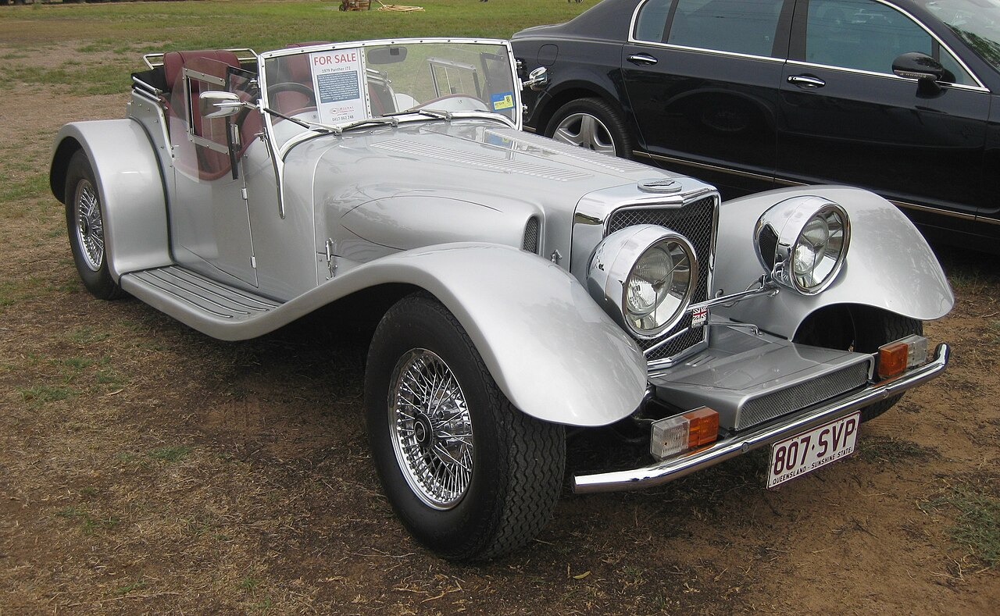
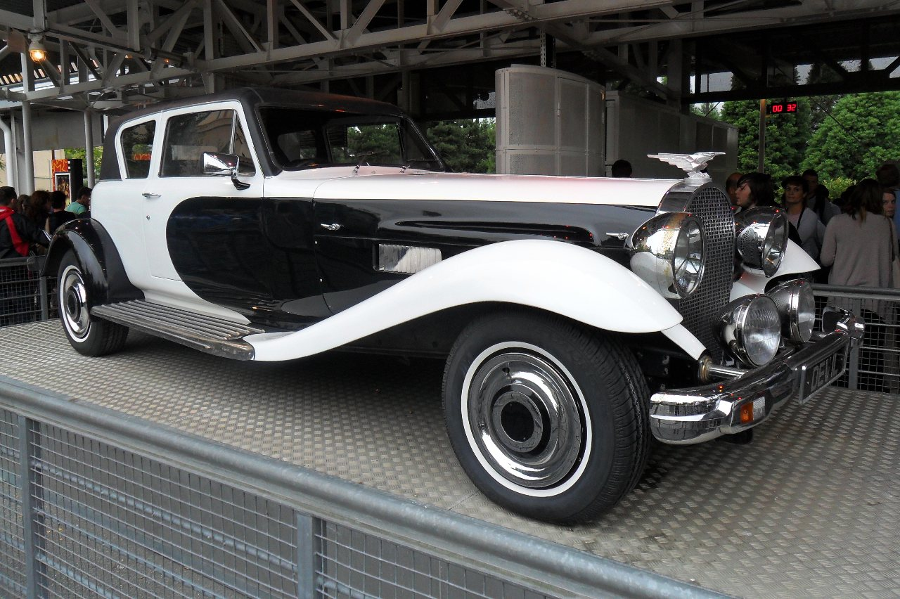

Fundada en 1972 por Robert Jankel, la empresa Panther fabricó inicialmente coches de estilo retro basados en componentes mecánicos de otros fabricantes.
Panther J72
Fabricante: Panther Westwinds Ltd.
Período: 1972-1981
Unidades Producidas: 368
Fábricas: Weybridge, Inglaterra

El J.72 fue un roadster de lujo que evocaba el Jaguar SS100, fabricado entre 1972 y 1981. Utilizaba motores Jaguar V12 de 5,3 L y motores XK de 3,8 L y 4,2 L.
Panther Lima
Fabricante: Panther Westwinds
Período: 1976-1982
Unidades Producidas: 500
Motor: Opel l4 de 2279cc, Vauxhall l4 turboalimentado
El Panther Lima fue un roadster retro construido por Panther Westwinds en la década de 1970. Utilizaba mecánicas de Vauxhall Viva y Magnum, con un motor de 2,3L.
Panther De Ville
Fabricante: Panther Westwinds Ltd.
Período: 1974-1985
Motor: Jaguar XK6 4.2 L, Jaguar V12 5.3 L
Unidades Producidas: 60

El Panther De Ville fue un vehículo de lujo inspirado en el Bugatti T41 "Royale", producido entre 1974 y 1985. Fue diseñado para atraer a una clientela rica y famosa, como Elton John y Oliver Reed.